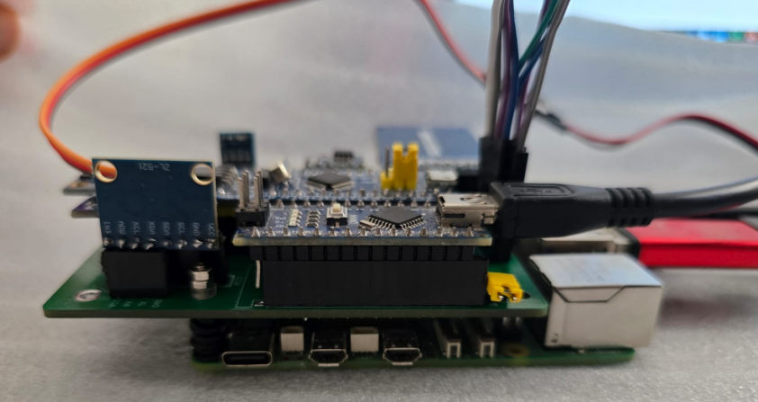

Desarrollo e implementación de una computadora de abordo para un satélite cubesat utilizando un sistema operativo en tiempo real y bibliotecas de código abierto.
Trabajo Práctico Profesional de grado orientado al diseño e implementación de un prototipo funcional de computadora de abordo (OBC) para un CubeSat junto a su correspondiente entorno de validación CI/CD.

Ver más
El proyecto se enmarcó dentro de la iniciativa ASTAR de la Facultad de Ingeniería de la Universidad de Buenos Aires orientada al desarrollo y lanzamiento de un CubeSat. Se abordó la investigación de arquitecturas de microcontroladores compatibles con estándares CubeSat, el desarrollo de protocolos de comunicación entre subsistemas y la implementación de un entorno de validación automatizada mediante CI/CD.
Se utilizó FreeRTOS como sistema operativo, libopencm3 como biblioteca de bajo nivel y GitLab CI/CD junto con una Raspberry Pi para la ejecución de pruebas automatizadas, priorizando la fiabilidad y la extensibilidad del sistema.